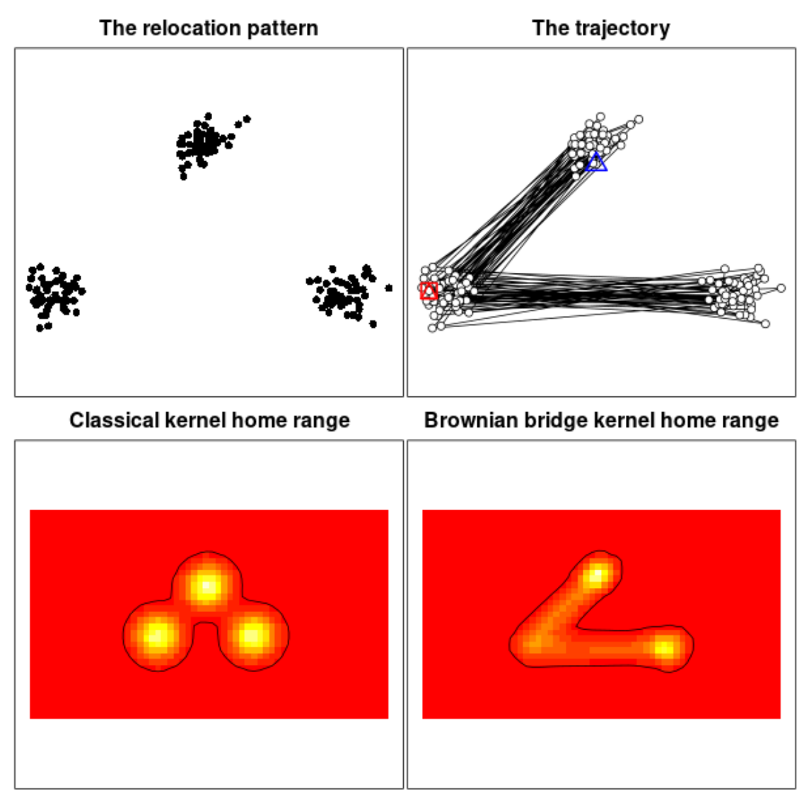

Kernal density estimations are commonly used to explore space use. The Brownian bridge kernel method places a kernel function above each step of the trajectory (a step is the straight line connecting two successive relocations). This method takes into account not only the position of the relocations, but also the path travelled by the animal between successive relocations.

Relocations: Here relocations are located in three patches. The use of these patches though are ordered, as shown with the trajectories. The Brownian bridge method allows the association between the patches to be included in the space use kernal density estimation.
This approach is advanced by adopting the biased random walk model. Here, a trajectory is decomposed into a succession of steps, each characterised by a speed and an angle with the east direction. The trajectories are generated as biased random walks when the probability density distribution of the angles is not uniform (i.e., there is a preferred direction of travel). Therefore, this does not suppose a purely diffusive movement, unlike the Brownian bridge (above).
We intend to record human movement in a Lassa fever endemic region. We will combine this with habitat use/landuse data and rodent occurrence to estimate time at risk for infection with LASV. We are taking a similar approach to Fornace et al. 2019.
Example
Data collected from a GPS device, carried for one week, with polling every 90 seconds has been used to explore the modelling pipeline. The R package adehabitatHR contains the functions to convert the geospatial and temporal data from the GPS recordings into a space use representation for estimating trajectories and modelling probability of use. Other packages used to handle time data (lubridate), spatial data (terra, sf) are required. Throughout I use here to produce relative paths and tidyverse for data manipulation.
Data were collected in San Diego, USA, conversion from EPSG:4326 (lat, lon) to equal distance projections of EPSG:32610 (UTM) are used to allow distances to be included.
Load packages
You may need to install the packages if you do not already have them.
Code
library(here)
here() starts at /Users/david/r_repositories/SCAPES
Code
library(lubridate)
Warning: package 'lubridate' was built under R version 4.1.3
Attaching package: 'lubridate'
The following objects are masked from 'package:base':
date, intersect, setdiff, union
Code
library(adehabitatHR)
Warning: package 'adehabitatHR' was built under R version 4.1.2
Loading required package: sp
Warning: package 'sp' was built under R version 4.1.2
Loading required package: ade4
Loading required package: adehabitatMA
Warning: package 'adehabitatMA' was built under R version 4.1.2
Registered S3 methods overwritten by 'adehabitatMA':
method from
print.SpatialPixelsDataFrame sp
print.SpatialPixels sp
Loading required package: adehabitatLT
Warning: package 'adehabitatLT' was built under R version 4.1.2
Loading required package: CircStats
Loading required package: MASS
Warning: package 'MASS' was built under R version 4.1.2
Loading required package: boot
Code
library(terra)
Warning: package 'terra' was built under R version 4.1.2
terra 1.7.18
Attaching package: 'terra'
The following object is masked from 'package:MASS':
area
The following object is masked from 'package:adehabitatMA':
buffer
Code
library(tidyterra)
Warning: package 'tidyterra' was built under R version 4.1.2
Warning: package 'units' was built under R version 4.1.2
udunits database from /Library/Frameworks/R.framework/Versions/4.1/Resources/library/units/share/udunits/udunits2.xml
Code
conflicted::conflict_prefer("select", "dplyr")
[conflicted] Will prefer dplyr::select over any other package.
Code
conflicted::conflict_prefer("filter", "dplyr")
[conflicted] Will prefer dplyr::filter over any other package.
Code
conflicted::conflict_prefer("buffer", "terra")
[conflicted] Will prefer terra::buffer over any other package.
Code
project_crs <-"EPSG:4326"SD_crs <-"EPSG:32610"
Load and process data
Data has been downloaded from the igotu GPS tracker and stored as week_test.csv. We read this in from the .csv file. It contains time-stamped recordings of location. Additional movement data is included but currently this is not used. local_datetime is produced using the device recorded Local Time and the Region timezone.
This table shows 10 random rows of the gps dataset. There are 5,041 observations between 2024-03-02 and 2024-03-10. We would expect 7,296 from this period so 31% of expected data are missing.